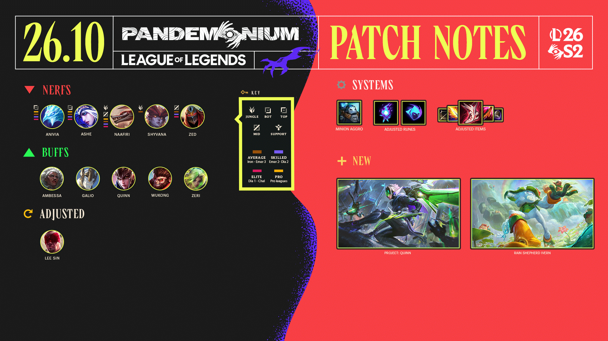

El parche 26.10 de League of Legends aterrizó el 13 de mayo con una cantidad de cambios importante. Ya habíamos cubierto el preview la semana pasada, pero acá está todo lo que llegó de verdad: la modernización de Lee Sin, una cadena de nerfs a los campeones que dominaron la Season 2 y el experimento más grande de Arena hasta ahora. Y de bonus, el Essence Emporium está de vuelta.
Lee Sin: por fin tiene escudo en minions
El Monje Ciego recibe lo que la comunidad pedía hace tiempo. Su W (Safeguard) ahora le otorga el escudo también cuando salta a minions o wards, no solo a campeones. El cooldown se unifica en 7 segundos para todos los casos (antes era 12s en no-campeones y 6s en campeones). El escudo en sí baja un poco en números (70 → 60 al nivel 1), pero la flexibilidad de usarlo en minions compensa ampliamente.
El otro cambio grande es su R (Dragon's Rage): el cuerpo del campeón pateado va a seguir volando y haciendo daño aunque muera en el trayecto. Fin de los momentos en que le hacías el kick perfecto y el muerto no llegaba a ningún lado.
La E (Tempest) baja un poco el scaling de AD (100% → 90%), pero el conjunto lo deja claramente más fuerte en movilidad.
Nerfs: Zed, Naafiri, Smolder y compañía
Buffs: Ambessa, Galio, Wukong y Zeri suben
Arena: el experimento 3x6
Arena deja el formato 2v2v2v2 de lado por este parche y pasa a 6 equipos de 3 jugadores. Es el cambio estructural más grande del modo desde su lanzamiento. Los augmentos y el balance de campeones fueron ajustados levemente, ya que Riot espera que el formato solo ya mezcle el meta.
También llegan mejoras a los Stat Anvils (que era una de las quejas más frecuentes) y ajustes a varios augmentos, entre ellos las capas de Tahm Kench como Guest of Honor.
Sistema: el aggro de minions ya no se activa cuando atacás
Este es un cambio silencioso pero importante: antes, cuando un campeón enemigo atacaba un minion aliado, el campeón entraba a la lista de aggro de los minions. Eso generaba situaciones donde parecía que los minions cambiaban de target de forma random. A partir de este parche, eso ya no ocurre. Los minions van a lo suyo.
Essence Emporium hasta el 10 de junio
Vuelve la tienda de Esencia Azul. Corre del 13 de mayo al 10 de junio con cromos, contenido especial y un título nuevo: "Big Serious Gamer" para los que tienen montañas de BE acumuladas. Si tenés esencia sin gastar, esta es la ventana.
El próximo parche (26.11) tiene fecha de llegada el 28 de mayo y viene con el rework del sistema de aggro de minions más profundo, nuevos cambios de ítems y el rework del Imperial Mandate. Ya está en el preview.